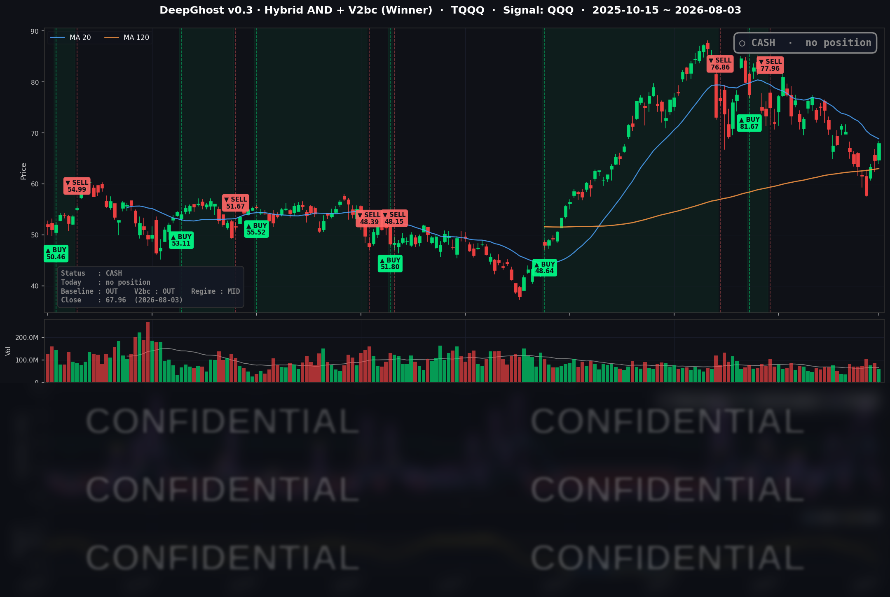

👻 매일 시그널과 히스토리를 홈페이지에서 한눈에 → www.ghostai.co.kr
나스닥이 2% 넘게 반등하였습니다. 투자 심리가 회복되고 있고 차트 저항선을 넘으면 매수 대기 자금이 들어올 것입니다. 경험상 내일 또는 모레 급락하지 않으면 매수 신호가 나올 수도 있겠습니다.
📊 오늘의 매매 신호
| 항목 | 내용 |
|---|---|
| 오늘 할 일 | ✅ 아무것도 안 해도 됩니다 |
| 포지션 상태 | 💵 현금 보유 중 (OUT OF POSITION) |
| 현금 보유 기간 | 2026-06-29 ~ 2026-08-03 (관망 지속) |
| TQQQ 종가 | $67.96 (+5.17%) |
오늘 TQQQ는 하루 만에 +5.17% 급등했습니다. 지수(QQQ +1.76%)가 오르면 그 3배로 움직이는 상품이라 반등장에서 눈에 띄게 뛴 것이죠.
TQQQ 시그널 — OUT OF POSITION
현재 상태: 현금 보유 중 | 신규 매수·매도 신호 없음

전략은 여전히 관망 모드입니다. 다만 "무조건 쉬는 중"은 아닙니다. 지수가 최근 며칠 강하게 오르면서 모델 내부의 진입 조건 카운트가 조금씩 채워지고 있는 국면입니다. 아직 방아쇠가 당겨지진 않았지만, 이 반등이 하루 이틀 더 이어진다면 매수 신호가 나올 수 있는 자리에 와 있습니다. 지금은 "손가락을 방아쇠에 올린 관망"이라고 보시면 됩니다.
왜 급등하는 날 안 샀을까요? 답은 간단합니다. 전략에는 추격 매수를 막는 안전장치가 있습니다. 하루 반짝 오른다고 바로 뛰어들지 않고, 진입 조건이 여러 날 꾸준히 충족되어야 매수합니다. 급등에 뒤늦게 따라붙었다가 되돌림에 물리는 것을 막기 위한 룰이며, 장기 성과를 지켜온 핵심 원칙입니다.
오늘 미국 시장 — 시황 요약
지수 마감
| 지수 | 종가 | 등락률 |
|---|---|---|
| S&P 500 | 7,600.50 | +1.48% |
| 나스닥 종합 | 25,913.90 | +2.13% |
| 다우 존스 | 53,178.41 | +1.32% |
| 러셀 2000 | 2,981.91 | +1.73% |
4대 지수가 모두 1.3% 넘게 동반 상승했습니다. 대형주·중소형주·경기민감주가 함께 오른 전형적인 리스크온 반등이었고, 나스닥이 +2.13%로 선두에 섰습니다. 금리에 민감한 중소형주(러셀 2000)도 지수 못지않게 강했습니다.
국채 금리 동향
| 만기 | 수익률 | 전일 대비 |
|---|---|---|
| 3개월 | 3.700% | +1.8bp |
| 10년 | 4.686% | -5.9bp |
| 30년 | 5.231% | -4.4bp |
단기 금리는 사실상 제자리였던 반면, 중장기 금리가 4~6bp 동반 하락했습니다. 장단기 스프레드(10년-3개월)는 +98.6bp로 정상적인 우상향 곡선을 유지하고 있어 경기침체를 알리는 역전 신호는 없습니다. 오늘 금리가 내린 이유는 연준이 완화적으로 돌아섰기 때문이 아니라, 뒤에 나올 유가 급락 때문입니다.
연준 발언 & 금리 패스
지난 7월 29일 FOMC에서 연준은 정책금리를 3.50~3.75%로 동결했습니다. 다만 표결은 9대 3으로, 세 명의 위원이 오히려 "금리 인상"을 주장하며 반대표를 던졌습니다. 물가가 오랫동안 목표(2%)를 웃돈 데 대한 매파적 반발입니다. 즉 연준은 아직 매파적 색채가 남아 있는 상태이며, 오늘의 금리 하락은 연준발이 아니라는 점이 중요합니다.
오늘의 핵심 이슈
- 지정학 완화 → 유가 급락 → 반등. 미국이 호르무즈 해협 개방 협상을 위해 대이란 공격을 철회했다는 소식에 지정학 리스크가 누그러졌습니다. 이에 유가가 급락하면서 인플레이션·금리 우려를 눌렀고, 이것이 이날 전면 반등의 1차 촉매였습니다.
- 대형 기술주 대반등이 나스닥을 견인. META(+6.02%), MSFT(+4.93%), 구글(+4.88%), 아마존(+4.58%) 등 메가캡 소프트웨어·클라우드가 강하게 튀어 올랐습니다. 아마존은 신고가권에 진입했습니다.
- 애플만 나 홀로 약세. 지수가 전면 상승하는 와중에 애플만 -1.78% 하락했습니다. 앞선 실적에서 4분기 매출 가이던스가 시장 기대를 밑돌았고, 중화권·서비스 부문이 부진했으며, 팀 쿡 CEO가 메모리·부품 공급 부족의 영향 확대를 경고한 여파입니다.
변동성 & 투자심리
VIX(공포지수)는 15.86으로 16 아래에 안착하며 안정적인 모습을 보였습니다. 반면 공포탐욕 지수(Fear & Greed)는 여전히 "공포(Fear)" 구간에 머물렀습니다. 다만 직전보다 개선되는 방향이었습니다. 지수는 크게 올랐지만 심리는 아직 반등을 온전히 신뢰하지 못하는, 지표 간 온도차가 있는 상태입니다.
매크로 & 원자재
- WTI 유가: $80.06 (-5.44%) — 지정학 완화로 급락
- 브렌트 유가: $83.51 (-7.33%) — 낙폭이 더 컸음
- 금: $4,110.90 (+1.53%) — 금리 하락·안전자산 수요로 강세
유가 급락이 이날 시장의 방향을 결정한 매크로 재료였습니다. 유가가 내리면 인플레이션 기대가 낮아지고, 이것이 장기 금리를 끌어내려 성장주의 밸류에이션 부담을 덜어주는 흐름으로 이어졌습니다.
주요 종목 동향
| 종목 | 전일 종가 | 당일 종가 | 등락률 | 비고 |
|---|---|---|---|---|
| META | 556.71 | 590.24 | +6.02% | 커뮤니케이션 섹터 견인, 이날 최강 |
| MSFT | 464.72 | 487.65 | +4.93% | 하이퍼스케일러 반등 |
| GOOGL | 356.13 | 373.51 | +4.88% | 인터넷 대형주 강세 |
| AMZN | 271.58 | 284.02 | +4.58% | 신고가권, 클라우드·소매 동반 |
| TSLA | 311.21 | 322.08 | +3.49% | 리스크온 수혜 |
| NVDA | 200.75 | 206.64 | +2.93% | 반도체 반등 선두 |
| QCOM | 147.61 | 151.57 | +2.68% | 반도체 강세 동참 |
| NFLX | 71.71 | 73.33 | +2.26% | 커뮤니케이션 강세 흐름 동반 |
| INTC | 90.20 | 91.00 | +0.89% | 소폭 상승, 상대열위 |
| MU | 823.03 | 829.50 | +0.79% | 메모리, 소폭 상승 |
| AVGO | 389.28 | 392.23 | +0.76% | 반도체 내 상대 약세 |
| AAPL | 308.91 | 303.42 | -1.78% | 실적 후폭풍, 나 홀로 약세 |
내일(8/4)은 장 마감 후 AMD 실적이 반도체·AI 트레이드의 방향타가 됩니다. 그리고 이번 주 최대 이벤트는 8월 7일(금) 7월 고용보고서입니다. 이번 반등이 며칠 더 이어질지, 아니면 되돌림이 나올지를 가를 변수들입니다.
Ghost.AI — Quantitative AI Investment
Model: DeepGhost v0.3 | Transformer-Based Deep Learning
Coverage: 13 tickers | Updated every trading day after US market close
⚠️ 본 자료는 정보 제공 목적으로만 작성되었으며 투자 권유가 아닙니다. 모든 투자의 책임은 투자자 본인에게 있습니다. 과거 성과가 미래 수익을 보장하지 않습니다.
[유의사항]
- 본 서비스는 불특정 다수를 대상으로 발행되는 단방향 정보 제공 서비스이며, 투자자 개인의 재산 상황·투자 목적·위험 선호도를 반영한 개별 투자 조언이 아닙니다.
- 고스트에이아이 주식회사는 고객과 쌍방향 의사소통(개별 상담, 맞춤형 자문 등)을 제공하지 않습니다.
- 본 콘텐츠는 투자 권유 또는 매매 주문의 청약·청약의 권유에 해당하지 않으며, 최종 투자 판단 및 그에 따른 손익의 책임은 전적으로 투자자 본인에게 있습니다.
고스트에이아이 주식회사